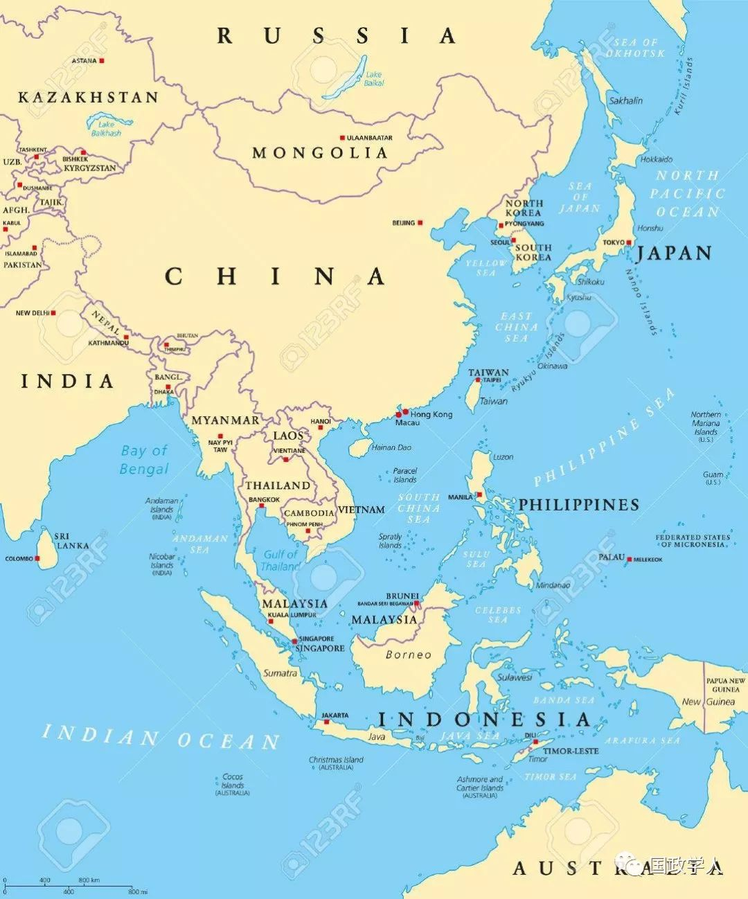

收录于合集

简 介
【 作者 】
Thomas Berger，托马斯·伯杰是波士顿大学帕迪全球研究学院的国际关系教授。伯杰在约翰·霍普金斯大学任教七年后，于2001年加入波士顿大学。伯杰多次在重要期刊上发表论文，包括国际安全、国际研究综述、德国政治和世界事务季刊。主要研究方向：德国和日本政治、国际关系和东亚政治比较研究、政治文化。
【 编译 】
** 金 琳**
【 来源 】
Thomas Berger, Set for stability? Prospects for conflict and cooperation in East Asia, Review of International Studies (2000), 26, 405–428
【 期刊简介 】
Review of International Studies是由剑桥大学出版社代表英国国际关系学会出版的国际关系学术期刊。根据期刊引用报告，该期刊的2017年影响力因子为2.067，在“国际关系”类别的85种期刊中排名第20位。
【 校对 】杨 洋 蔡 宇
【 审核 】李代霓
核心观点
首先，文章先简单介绍了普林斯顿大学(Princeton)国际关系教授亚伦•弗里德伯格(Aaron Friedberg)为国际安全撰写的一篇颇具影响力的文章，题为《亚洲的竞争时机已经成熟》。弗里德伯格对亚洲地区未来的稳定持绝对悲观的态度。他认为，从国际关系理论的观点来看，在亚洲范围内，几乎所有可以促进西欧和北美和平与稳定的条件都不存在，而促进冲突和不稳定的许多因素却大量存在。作者结合亚洲地区的最新动态，重新审视弗里德伯格的观点，主要论点为弗里德伯格所鉴别为增进东亚不稳定程度的多数结构性特征事实上都使得东亚更趋稳定。权力的平衡有利于维持现状，并且经济上的相互依存度正在上升。此外，近年来亚洲地区各种国际机构，尤其是专门处理安全问题的机构，都在稳步增长。然而，尽管有这些积极的趋势，大多数分析人士坚持认为，亚洲仍然是一个潜在的危险和不稳定的地方。作者认为讽刺的是，造成东亚不稳定的因素反而是弗里德伯格等悲观人士最不关注的因素，即在国际关系理论中容易被忽略或淡化的变量——国际关系行为体的意图和感知。

文章导读
弗利德伯格等悲观主义人士认为由于在东亚地区朝鲜政权的不可预测性、中国大陆 与台湾地区从根本上不可调和的民族主义运动，导致二者结合形成了两个可能会使整个地区陷入战争和冲突高度易燃的永久性危机地带。由于美国和日本潜在的孤立主义倾向可能会导致该地区危险局势进一步恶化，一旦发生重大军事冲突，这些趋势可能会引发将两国联系在一起的虚拟安全条约体系的危机，并导致整个地区安全秩序的瓦解。
而作者认为东亚的冲突并非不可避免。在中短期内，朝鲜和台湾的危机都是可控的，美日战略关系继续发展和演变，并且潜在的地缘战略和地缘经济结构力量也会支持和平的结果。然而，文化等意识形态因素在该地区引发暴力军事冲突的可能性非常大，这可能对亚洲乃至其他地区的国际关系产生深远影响。更重要的是，从长远来看，中国的崛起表明权力平衡正在发生根本性转变。因此，各主要区域大国的领导人有责任制定双边和多边的安全机制，以便应对可能会对区域和平与安全产生短期或长期的威胁。
作者主要回顾国际关系理论中关于冲突起因的争论，并将其应用于东亚的现状。第一部分，作者解释了问题提出的渊源以及核心观点。在第二、三、四部分中，简要阐述了当代国际关系理论的三大主流范式，并从中衍生出一些关于战争和冲突因素的命题，运用现实主义和自由主义理论解释东亚地区为何会出现持续乃至日益增长的稳定。在第五部分中，利用建构主义的观点，找出一部分导致东亚地区不稳定的主要因素。作者在利用三大主流理论论述的过程中将这些理论范式结合起来，阐明东亚国际环境的不同方面，从而对该地区的安全局势作出更全面和准确的评估。第六部分，作者就可采取何种措施来应对东亚地区出现影响地区稳定的威胁提出一些建议。作者认为，政治领导人特别是该区域民主国家的领导人，必须采取各种措施来对付潜在的问题。在这方面，有两项主要任务，一项是处理中期至短期问题，另一项是长期管理该区域的战略问题。在文章的最后，作者认为为了创造一个良性和稳定的国际安全环境，该区域内的其他国家应当一方面不威胁中国，但另一方面能够有效处理因中国发展造成的安全威胁，因此作者建议在亚洲范围内推行类似在欧洲范围内扩展到俄罗斯的和平伙伴关系。
扫描下方小程序码查看原文p df
本文由国政学人微信公众平台编译首发
更多阅读
国政学人 （ID：guozhengxueren)
为方便学人及时阅读高质量文章
别忘把国政学人设置 星标 哦~


国政学人
支持学术公益与知识传播
微信扫一扫赞赏作者 __赞赏
已喜欢，对作者说句悄悄话
取消 __
发送给作者
发送
最多40字，当前共字
上一页 1/3 下一页
长按二维码向我转账
支持学术公益与知识传播
受苹果公司新规定影响，微信 iOS 版的赞赏功能被关闭，可通过二维码转账支持公众号。